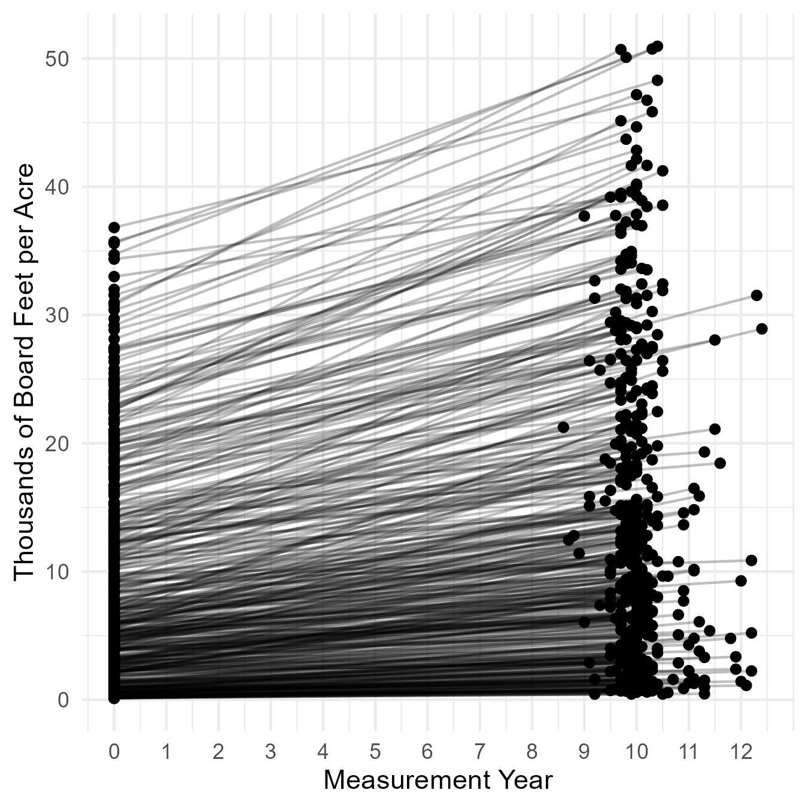
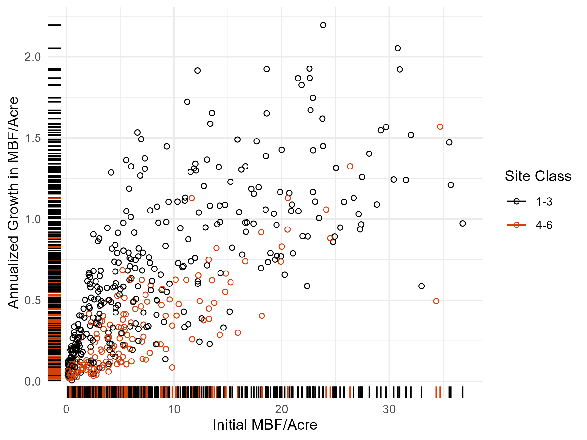
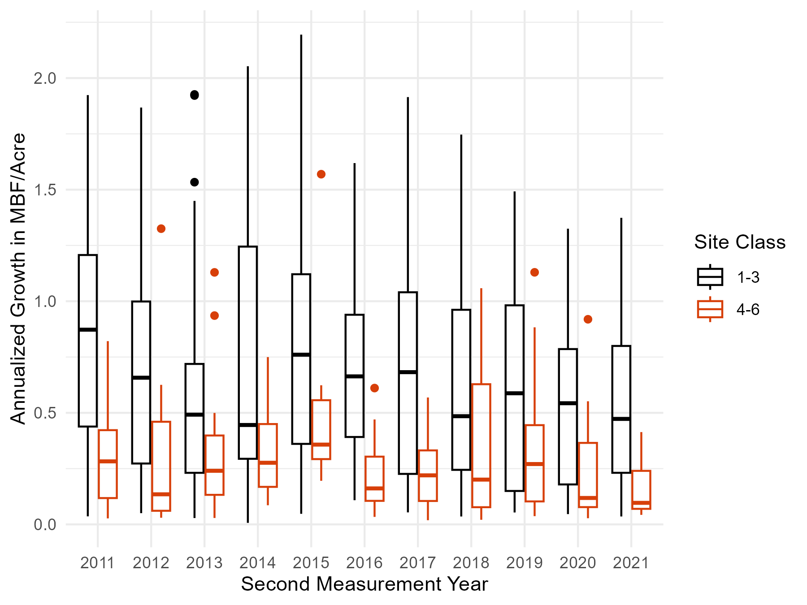
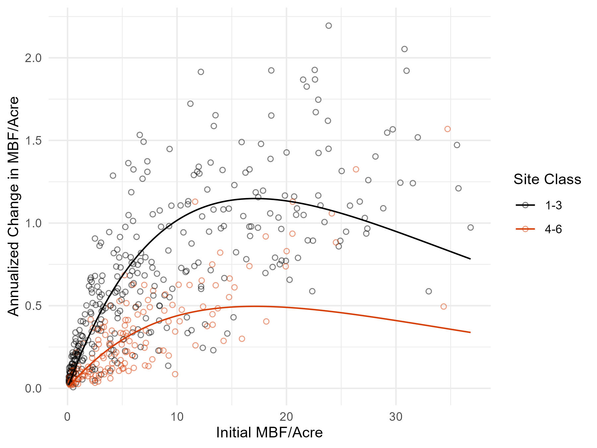

library(tidyverse) # General
library(gt) # Tables
library(stargazer) # Regression Tables
library(magrittr) # Pipes
color_beav = "#D73F09" # In the absence of a beav theme. Assignment 1
Andrew Steinkruger
AEC 699
April 6, 2026
1. Introduction and Data
Let’s check out Forest Inventory Analysis data on tree growth in Oregon.
In this exercise, I use four basic geoms:
- geom_point
- geom_line
- geom_rug
- geom_function
I did learn something new about ggplot2: geom_function is only a nice shortcut for univariate functions. With a multivariate function, the syntax for geom_function becomes unwieldy. In that case, computing a large set of function values explicitly (rather than implicitly with geom_function) becomes easier than figuring out the syntax, and then geom_line or geom_smooth would do just as well.
Anyway, let’s load some packages.
Now, data. We can process some large tables into our estimates of interest.
dat_condition =
"data/OR_COND.csv" %>%
read_csv %>%
select(INVYR,
PLT_CN,
CONDID,
OWNGRPCD,
FORTYPCD,
SITECLCD)
dat_tree =
"data/OR_TREE.csv" %>%
read_csv %>%
select(INVYR,
PLT_CN,
TRE_CN = CN,
CONDID,
SPGRPCD)
dat_growth =
"data/OR_TREE_GRM_ESTN.csv" %>%
read_csv %>%
select(INVYR,
PLT_CN,
TRE_CN,
LAND_BASIS,
ESTIMATE,
COMPONENT,
SUBPTYP_GRM,
REMPER,
TPAGROW_UNADJ,
ANN_NET_GROWTH,
EST_BEGIN,
EST_END) %>%
filter(LAND_BASIS == "TIMBERLAND") %>% # Subset to timberland
filter(SUBPTYP_GRM == 1) %>% # Subset to subplots
filter(ESTIMATE == "VOLBFNET") %>% # Subset to net board feet
filter(COMPONENT == "SURVIVOR") %>% # Subset to surviving trees
select(-ESTIMATE, -COMPONENT, -LAND_BASIS) %>%
left_join(dat_tree) %>%
filter(SPGRPCD == 10) %>% # Subset to Douglas fir species
left_join(dat_condition) %>%
filter(OWNGRPCD == 40) %>% # Subset to private owners
filter(FORTYPCD %in% 200:203) %>% # Subset to Douglas fir conditions
# Board feet/acre
mutate(EST_BEGIN_ACRE = EST_BEGIN * TPAGROW_UNADJ,
EST_END_ACRE = EST_END * TPAGROW_UNADJ,
ANN_NET_GROWTH_ACRE = ANN_NET_GROWTH * TPAGROW_UNADJ) %>%
# Board feet/acre by plot
group_by(INVYR, PLT_CN, REMPER, SITECLCD) %>%
summarize(EST_BEGIN_ACRE_PLOT = sum(EST_BEGIN_ACRE),
EST_END_ACRE_PLOT = sum(EST_END_ACRE),
ANN_NET_GROWTH_ACRE_PLOT = sum(ANN_NET_GROWTH_ACRE)) %>%
ungroup %>%
# Drop outliers
filter(ntile(ANN_NET_GROWTH_ACRE_PLOT, 100) %in% 2:99) %>%
filter(ntile(EST_BEGIN_ACRE_PLOT, 100) %in% 2:99) %>%
filter(ntile(EST_END_ACRE_PLOT, 100) %in% 2:99) %>%
# Site classes into bins and BF to MBF.
mutate(SITECLCD_Bin = ifelse(SITECLCD < 4, 0, 1),
MBF_0 = EST_BEGIN_ACRE_PLOT / 1000,
MBF_1 = EST_END_ACRE_PLOT / 1000,
MBF_Annual = ANN_NET_GROWTH_ACRE_PLOT / 1000) %>%
select(-ends_with("_PLOT")) %T>%
# Export
write_csv("data/dat_assignment1.csv")We can read and tabulate the processed data.
dat = "data/dat_assignment1.csv" %>% read_csv
dat %>% head %>% gt| INVYR | PLT_CN | REMPER | SITECLCD | SITECLCD_Bin | MBF_0 | MBF_1 | MBF_Annual |
|---|---|---|---|---|---|---|---|
| 2011 | 4.820267e+13 | 9.6 | 3 | 0 | 0.6751257 | 2.2952884 | 0.16876695 |
| 2011 | 4.820273e+13 | 9.9 | 3 | 0 | 4.5962706 | 10.5816417 | 0.60458293 |
| 2011 | 4.820274e+13 | 9.9 | 2 | 0 | 12.0469038 | 24.9146419 | 1.29977153 |
| 2011 | 4.820275e+13 | 10.0 | 3 | 0 | 4.5586696 | 6.0840920 | 0.15254225 |
| 2011 | 4.820278e+13 | 10.3 | 2 | 0 | 0.3383332 | 0.7098767 | 0.03607219 |
| 2011 | 4.820278e+13 | 9.9 | 3 | 0 | 16.6759229 | 25.8011576 | 0.92174088 |
Next, we can visualize the data.
2. Visualization and Modeling
2.1. Yield
What do the data really show? Yields over intervals.
vis_1 =
dat %>%
mutate(INVYR_0 = INVYR - REMPER) %>%
rename(INVYR_1 = INVYR) %>%
mutate(INVYR_1 = INVYR_1 - INVYR_0,
INVYR_0 = INVYR_0 - INVYR_0) %>%
pivot_longer(cols = c(INVYR_0, INVYR_1, MBF_0, MBF_1),
names_to = c("VARIABLE", "YEAR"),
names_sep = "_") %>%
pivot_wider(names_from = VARIABLE, values_from = value) %>%
ggplot() +
geom_point(aes(x = INVYR,
y = MBF)) +
geom_line(aes(x = INVYR,
y = MBF,
group = PLT_CN),
alpha = 0.25) +
scale_x_continuous(breaks = 0:12) +
labs(x = "Measurement Year",
y = "Thousands of Board Feet per Acre") +
theme_minimal()
ggsave("out/vis_1_assignment1.png",
vis_1,
dpi = 300,
width = 4.5,
height = 4.5)
Figure 1. Thousands of board feet per acre for each plot by measurement year.
2.2. Growth
But what do we really care about? Growth, or the change in yield with time.
vis_2 =
dat %>%
ggplot(aes(x = MBF_0,
y = MBF_Annual,
color = SITECLCD_Bin %>% factor(labels = c("1-3", "4-6")))) +
geom_point(shape = 21,
fill = NA) +
geom_rug() +
scale_color_manual(values = c("black", color_beav)) +
labs(x = "Initial MBF/Acre",
y = "Annualized Growth in MBF/Acre",
color = "Site Class") +
theme_minimal()
ggsave("out/vis_2_assignment1.png",
vis_2,
dpi = 300,
width = 6,
height = 4.5)
Figure 2. Annualized growth in yield with respect to initial yield.
2.3. Time Series
What if the calendar year matters?
vis_3 =
dat %>%
ggplot() +
geom_boxplot(aes(x = INVYR %>% factor,
y = MBF_Annual,
color = SITECLCD_Bin %>% factor(labels = c("1-3", "4-6"))),
fill = NA) +
scale_color_manual(values = c("black", color_beav)) +
labs(x = "Second Measurement Year",
y = "Annualized Growth in MBF/Acre",
color = "Site Class") +
theme_minimal()
ggsave("out/vis_3_assignment1.png",
vis_3,
dpi = 300,
width = 6,
height = 4.5)
Figure 3. Annualized growth in yield by site class with respect to calendar years.
It doesn’t really look like the calendar year matters with the information at hand.
2.4. Growth Modeling
To wrap up, let’s fit a simple growth model to the data.
We can first derive a convenient form for the Ricker model.
Let \(N_t\) denote yield at time \(t\), \(r\) a growth rate, and \(K\) a limiting parameter (not a carrying capacity).
Let \(dN_t = N_{t + 1} - N_t\).
\[ \begin{align} N_{t + 1} & = N_t e ^ {r(1 - \frac{N_t}{k})} \\ ln(N_{t + 1}) & = ln(N_t e ^ {r(1 - \frac{N_t}{K})}) \\ ln(N_{t + 1}) - ln(N_t) & = r - \frac{r}{K}N_t \\ ln(\frac{dN_t}{N_t}) & = r - \frac{r}{K}N_t \end{align} \]
We can estimate this expression by ordinary least squares.
Let \(Y = ln(\frac{dN_t}{N_t})\), \(\beta_0 = r\), \(\beta_1 = \frac{r}{K}\), and \(X_1 = N_t\).
Then we are estimating \(Y = \beta_0 + \beta_1 X_1 + \epsilon\).
With binned site class \(X_2 \in \{0, 1\}\) we can instead estimate \(Y = \beta_0 + \beta_1 X_1 + \beta_2 X_2 + \epsilon\).
mod =
dat %>%
mutate(Y = log(MBF_Annual / MBF_0),
X_1 = MBF_0,
X_2 = SITECLCD_Bin,
.keep = "none") %>%
lm(Y ~ X_1 + X_2,
data = .)
b_0 = mod$coefficients[[1]]
b_1 = mod$coefficients[[2]]
b_2 = mod$coefficients[[3]]
stargazer(mod, type = "html")| Dependent variable: | |
| Y | |
| X_1 | -0.058*** |
| (0.003) | |
| X_2 | -0.839*** |
| (0.060) | |
| Constant | -1.703*** |
| (0.045) | |
| Observations | 489 |
| R2 | 0.465 |
| Adjusted R2 | 0.463 |
| Residual Std. Error | 0.613 (df = 486) |
| F Statistic | 211.613*** (df = 2; 486) |
| Note: | p<0.1; p<0.05; p<0.01 |
The convenient Ricker transformation unfortunately returns inconvenient coefficient values.
That aside, things look good! This is a fair model for a first pass.
Let’s visualize the model results and call it a day.
vis_4 =
dat %>%
ggplot() +
geom_point(aes(x = MBF_0,
y = MBF_Annual,
color = SITECLCD_Bin %>% factor(labels = c("1-3", "4-6"))),
shape = 21,
alpha = 0.50,
fill = NA) +
geom_function(aes(x = MBF_0,
color = "1-3"),
fun = ~ .x * exp(b_0 + b_1 * .x)) +
geom_function(aes(x = MBF_0,
color = "4-6"),
fun = ~ .x * exp(b_0 + b_1 * .x + b_2)) +
scale_color_manual(values = c("black", color_beav)) +
labs(x = "Initial MBF/Acre",
y = "Annualized Change in MBF/Acre",
color = "Site Class") +
theme_minimal()
ggsave("out/vis_4_assignment1.png",
vis_4,
dpi = 300,
width = 6,
height = 4.5)
Figure 4. Annualized growth in yield by site class with model estimates.
The fit is great for lower initial yields, and not so great for higher ones.
A next step is to compare these model results to some values in the literature.
3. Conclusion
We learned a little about Douglas fir growth.